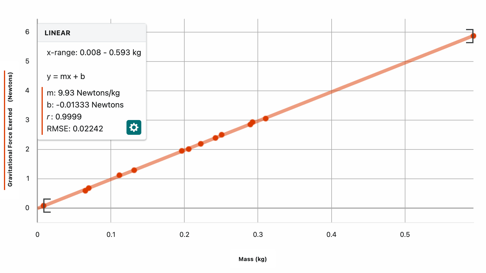

Gravitational Force Lab Lab Report
Due 10/9
Data Collection Group: Carson West, Leo Enright, Jaswanth Sai Deevela, William Horstmann
Reporting Group: Carson West
Purpose:
To explore the relationships between the mass and gravitational force acted upon an object on the surface of the Earth.
Materials
- 3 Beam Balance
- Force Probe
- Various Objects
- iPhone 14
- Mechanical Pencil
- Shoe
- Sandwich
- Water Bottle
- Key fob for a Mustang Mach E
- Standard weight
- TI-84 Calculator
- Notebook
- Headphone Case
- Rag
- Chromebook Charging Cable
- Wallet
- Roll of Tape
Procedure
Main Experiment
Setup
A triple beam balance was set on the table and all three beams were set to zero. A force probe was attached to a burette stand using a burette clamp such that the hook that measured the force was facing directly down, and therefore any object attached to that hook would have gravity act against it, and its gravitational force measured since it would be equal to the normal forces(the force of the hook holding the object against gravity) of the hook at equilibrium. The probe was connected to the computer and its measurement was zeroed to remove the measurement of the hook's own gravitational force from the future measurements.
From this point various objects were selected, and each objects underwent the weighing and massing processes described below.
Measuring Gravitational Force (Weight)
The measurement of the force probe was checked to equal zero before attaching the object to the hook on the force probe. The object was hooked to the force probe in any manner possible, and the object was allowed to settle into a state of rest, where the gravitational forces and the normal force of the hook were at equilibrium and therefore equal in magnitude. Once equilibrium had been achieved, the measured force was recorded, and the object was detached from the hook.
Measuring Mass
The triple beam balance had all three beams masses set to the zeros place on the beam, and the item was placed onto the balance platform. The middle beam had its weight moved every hundreds of grams place until the balance shifted over, indicating that the item on the balance had less mass than that many hundreds of grams. The weight was move back once to make the balance shift back over, and then this process was repeated with beam indicating the tens of grams. Upon finding a hundreds and tens of grams that the object had a lesser mass to, the tens beam was once again set back one place so that the object had a greater mass. Finally, the single and tenths beam was moved so that a balance between the object and the defined masses was achieved. Once a ones and tenths of grams was found to create a near-perfect balance with the object, indicating an identical mass, the weight of each of the beams was summed and recorded for the object. The object was removed from the triple beam balance and the masses were once again moved back to zero for the next object to be masses.
Data
Main data table
| Item |
Kilograms |
Newtons |
Newtons per Kilogram
Found by dividing the Newtons value by the Kilograms value |
| Mechanical Pencil |
0.0083 |
0.08 |
9.64 |
| Rag |
0.0652 |
0.59 |
9.05 |
| Key fob for a Mustang Mach E |
0.0698 |
0.68 |
9.74 |
| Wallet |
0.1115 |
1.12 |
10.04 |
| Headphone Case |
0.1316 |
1.29 |
9.80 |
| TI-84 Calculator |
0.1964 |
1.95 |
9.93 |
| Sandwich |
0.2058 |
2.01 |
9.77 |
| Standard Metal Mass |
0.2222 |
2.19 |
9.86 |
| iPhone 14 |
0.2422 |
2.39 |
9.87 |
| Chromebook Charging Cable |
0.2506 |
2.5 |
9.98 |
| Roll of Tape |
0.2897 |
2.85 |
9.84 |
| Notebook |
0.2926 |
2.93 |
10.01 |
| Shoe |
0.3105 |
3.05 |
9.82 |
| Water Bottle |
0.5932 |
5.87 |
9.90 |
1 Variable Statistics for the found values of
| n |
mean |
SD |
min |
Q1 |
med |
Q3 |
max |
SE |
| 14 |
9.804 |
0.242 |
9.05 |
9.77 |
9.85 |
9.93 |
10.04 |
0.0641 |
Data Analysis
Mass-Gravitational Force Graph, line of best fit of the Mass-Gravitational Force Graph

Figure 1: Mass-Gravitational Force graph for various objects. This graph indicated that as the mass of an object increases, its gravitational force increases. There is a strong positive linear correlation between mass and gravitational force(weight).
Equation 1: Equation of the line of best fit of the Mass-Gravitational Force graph, calculated by Vernier Graphical Analysis.
Gravitational Force by Mass-Mass Graph, found constant for the gravitational force by mass

Figure 2: Gravitational Force by Mass-Mass Graph. The found Gravitational Force by Mass was calculated by dividing the gravitational force of an object by the mass of the same object. A horizontal line was placed at the average value for Gravitational Force by Mass. Notice that the relationship between the Gravitational Force by Mass is constant, with any variability coming by experimental error. The values average around , with a standard deviation of , a very small variability.
Equation 2: The found average ratio between gravitational force and mass for all objects sampled.
Conclusion
Relation between Mass and Gravitational Force
The relationship between Mass and Gravitational Force is positive and linear. We can confirm this by graphing the relationship, creating Figure 1, the Mass-Gravitational Force graph, and seeing that the line of best fit is a straight, linear line.
That means that when the mass of an object increases, its gravitational pull from the earth will increase.
// Refer back to math model. Ex
Where:
- y = y
- x = x
// Explain each variable & coefficient
// What that means for the experiment physically
// Derive base equation
Error Analysis
The readings of the force probe and the triple beam balance was assumed to be accurate, but it cannot be known if they are. The objects were massed to the nearest tenth of a gram, and the objects were weighed to the nearest thousandth of a newton, and then rounded to the nearest hundredth of a newton.